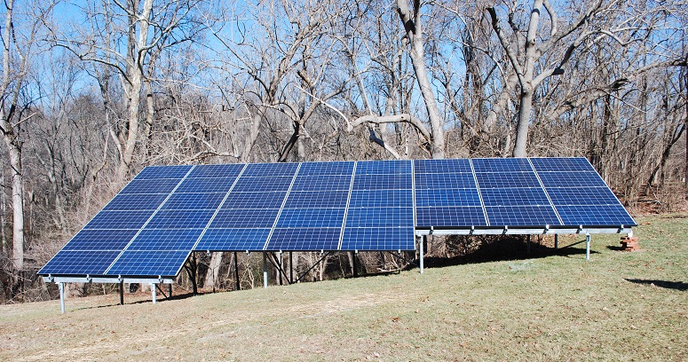
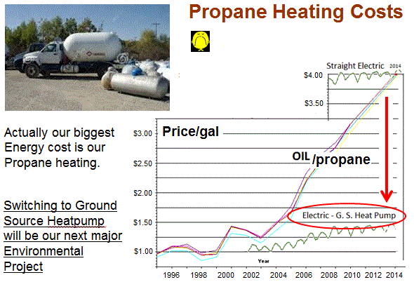
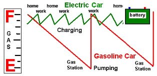

{kind=link}

 Our Energy Pie: The pie chart at right shows that our biggest energy consumption and fossil fuel emissions are for electricity, heating ventilation and air conditioning and transportation. Although these energy sectors are significant and costly and may seem beyond our grasp as individuals... in fact we can make a difference.
Energy Choices: In the graphic, above right, it turns out that we each as individuals face major energy milestones in our lives every few years anyway. At these points, we have to make major costly energy decisions and these decisions will affect our emissions for a decade or more. It is best to have considered in advance what direction you will go the next time you need a repair to your home or need to purchase a new vehicle. The prepared mind, having done the homework, will realize the the cheapest up-front option is most often not the lowest cost in the long run, and in almost all cases, the cheapest up-front is not the best for us or our environment.
Solar is here now! Solar is now down to less than half the cost from the utility. See how our Meeting House went solar and saved us more than half on our energy costs. Our electric bills are now just the minimum $8/month and will be for the forseable future. And even for those in apartments or who have too many trees, there is now community solar programs the let anyone sign up for solar in a community garden instead of on their own roof. Our array, shown above, is in our front yard and makes our meeting 100% carbon neutral.
Heatpumps beat oil and gas: We replaced our propane heat at the meeting house with a heatpump and saved 2/3rds of our energy costs. We went from $4000 a year in Propane to only an additional $1400 for electricity. We then eliminated even that cost by adding another third to our solar array to again bring us to carbon neutral.
Electric Vehicles are Here! The most frequent large energy decision we make is purchasing a car. The bad news is that the average life of a gas car (over many owners) is on the order of 18 years before it is scrapped and before it stops burning gas and emitting toxic emissions. Do we consider the consequences on our future throuigh 2036 when we make such a purchase? With the explosive progress in EV's in just 8 years, will you even be able to sell a dinosaur-burner to someone 8 years from now?
The good news is that we are now 8 years into mass production of Electric Vehicles and there are 42 makes and models on the market - one for almost every need. In addition, the major car manufacturers as of 2018 have committed to production of another 150 models to electrify most of their products in just the next 7 years. Please consider an EV at your next car purchase.
And remember, almost everything you hear about EV's is probably outdated and wrong! See the EV Misinformation page
Over 42 New EV's on the market in 2018: More than 28 of these 42 EV's now cost less than the average cost of gas cars and the price is still going down as shown in the graphic above right (download a full size PDF). of the list. At least nine of the 12 battery EV's now cost less than the average American $35k gas car, and at least 45% of the plug-in-hybrids also cost less.
 Used EVs are very Innexpensive!: Since EV's have been out now for 8 years, there are plenty of used EV's on the market too. And since all EV's have warranteed batteries for 8 years or 150,000 miles on the battery, the thrifty shopper can find excellent deals in used EV's as many first-adopters have moved on from their first leased EV to the latest model. Most EV's on the used market are coming off-lease after 3 years and are excellent deals. Consider these searches from Autotrader.com:
Battery-EV: SMARTS and iMiEV's under $8k - Excellent lowest price EV's
Battery-EV: Nissan LEAF's for under $10k - Excellent commuter and local travel
Plugin Hybrid: Chevy Volts for under $15k - Excellent all purpose car and trips
Which EV for you? An EV is ideal for daily use, commuting and local travel. In 2016, an EV is better, faster, cheaper to buy, cheaper to operate and cheaper to maintain. Yes, they did cost more than a gas car in 2010 when they first came out, but the average price became less in 2013 and is now a full $7k less than the average cost of a gas car when you include the Federal Tax credit. If you have more than one car in your family, and one can be used exclusively for local travel, then a Battery Electric is a perfect match. The annual American daily travel is under 40 miles, and so an EV with a range of 70 miles or so provides plenty of buffer.
Single? Only one car? If you only have access to one car, then it needs to both be electric for local travel and have a backup gas engine for trips. The best car in this category is the Chevrolet Volt or the BMW i3. The Volt's 50 mile daily electric range may sound small, but remember, that meets the dialy average of all americans and the gas engine is always there to start up if you need to go farther.
Charging Infrastructure and Time to charge: It is very important to understand, that you buy an EV for the ultimate convenience of plugging-in at night and beginning each day with a full battery and full range. This means never having to go to a public gas station (or charging station) again. It also means total independence from our $1 billion dollar addiction to foreign oil too. In fact, a few solar panels on your house, can provide enough energy to fully charge an EV everyday FOREVER as shown at right. Talk about security! Of course, if you do not have access to a parking space and electric outlet every night, then an EV is not for you at this time. But it is still an excellent approach for the 200 million Americans that do live in single family detached homes. Apartments and condo's are not far behind. Maryland has passed a law that multi-unit dwellings do have to allow the installation of a charging outlet where practical.
 Charging from standard outlets: Remember, overnight charging from just an existing standard 120v outlet can restore from 40 to 50 miles of daily range and most commuters use less than the American average 40 miles a day. Since there are millions of outdoor standard outlets at homes, and churches and parking lots at work, plugging in there also can maintain the full 80 mile range of some EV's. See our examples around Annapolis
Charging from standard outlets: Remember, overnight charging from just an existing standard 120v outlet can restore from 40 to 50 miles of daily range and most commuters use less than the American average 40 miles a day. Since there are millions of outdoor standard outlets at homes, and churches and parking lots at work, plugging in there also can maintain the full 80 mile range of some EV's. See our examples around Annapolis
Public Charging: There is much media attention to public charging as if EV's are dependent on them. Actually, this is not true. Remember, the optimum use of the EV is daily charging overnight at home and never having to charge away from home. One reason you see so much about public charging is because it is something that 3rd party vendors can try to sell to others. We are so used to our century legacy of the Gas-tank/Gas-station public refueling model of our daily lives that we overlook the fact that EV's are refueled while they are PARKED, not while in use like Gas cars. And the average car spends 21 hours a day parked somewhere, usually at home and at work where there is plenty of time to fully charge from just a simple 120v outlet. Range Anxiety is overblown since the EV driver begins the day every day with a full range EV.
Other Major Energy Choices:
 Solar Power at Home: Of course, the solar revolution is well underway. If you own your own home and have access to good Sun exposure on your roof or yard, there is no better investment for your clean energy future than solar. The amortized cost of solar now days is less than half the cost of utility power and guarantees about 10% return per year on every dollar invested. This sure beats 1% return on savings from a bank. For more info see my page or our
Annapolis Friends Meeting solar page.
Solar Power at Home: Of course, the solar revolution is well underway. If you own your own home and have access to good Sun exposure on your roof or yard, there is no better investment for your clean energy future than solar. The amortized cost of solar now days is less than half the cost of utility power and guarantees about 10% return per year on every dollar invested. This sure beats 1% return on savings from a bank. For more info see my page or our
Annapolis Friends Meeting solar page.
Community Solar: But even if you live in shade, or an apartment or condo, remain optomistic. Maryland is one of the many states that have approved community solar programs where anyone can invest in solar panels in a community location, and have the power subtracted form their own electric bill. This allows everyone to invest in solar, not just those with good sun and homeownership.
Home Heating: The largest personal Energy system in our lives is our home heating system and if we are burning either Home heating oil or propane, these are the dirtiest form of heating there is. Natural gas is half the carbon emissions, but still, its present low price is dependent on hydraulic fracturing which has other significant environmental impact not to mention it is still a fossil fuel. If you are still using oil or propane it is time to seriously consider the switch to a heatpump on your next HVAC event to eliminate emissions and also to save you more than half in the long run. In my case (below) we switched from over $3000 a year in heating oil to a heatpump which then only cost about $1200 a year. Similarly for out Meeting House, the switch from nearly $4000 per year of Propane was reduced to only $1200 for electricity and in both cases, the added electricity was generated 100% from solar.
...
 WE CAN DO IT! The amazing thing is that it is CHEAPER to switch our energy systems to
renewable than it is to continue with Fossil fuel! First of all, do not get mislead by arguments
of BREAK-EVEN or PAYBACK since payback is from day-1. See
the the breakeven discussion.
WE CAN DO IT! The amazing thing is that it is CHEAPER to switch our energy systems to
renewable than it is to continue with Fossil fuel! First of all, do not get mislead by arguments
of BREAK-EVEN or PAYBACK since payback is from day-1. See
the the breakeven discussion.
Second, do not be misled that it is too late and it is impossible to get there from here. The slide at right show's one family's wake-up call in 2006 time frame when they realized the nearly 3000 gallons of fossil fuel they were using at ever increasing cost.